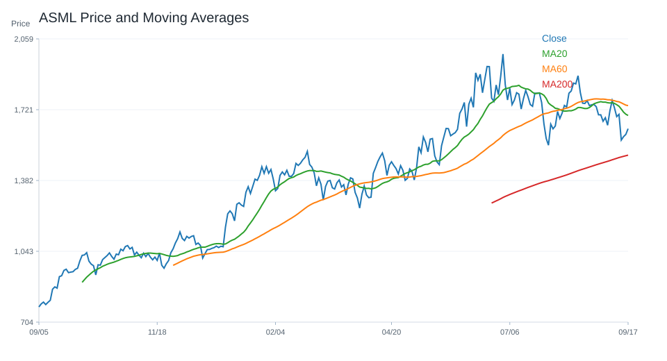
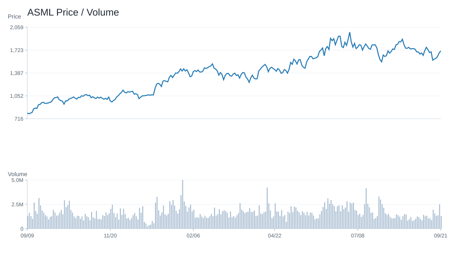
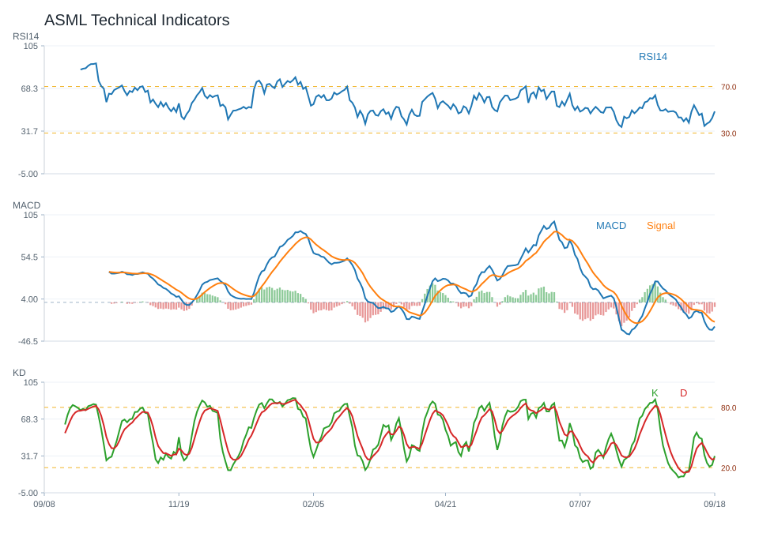
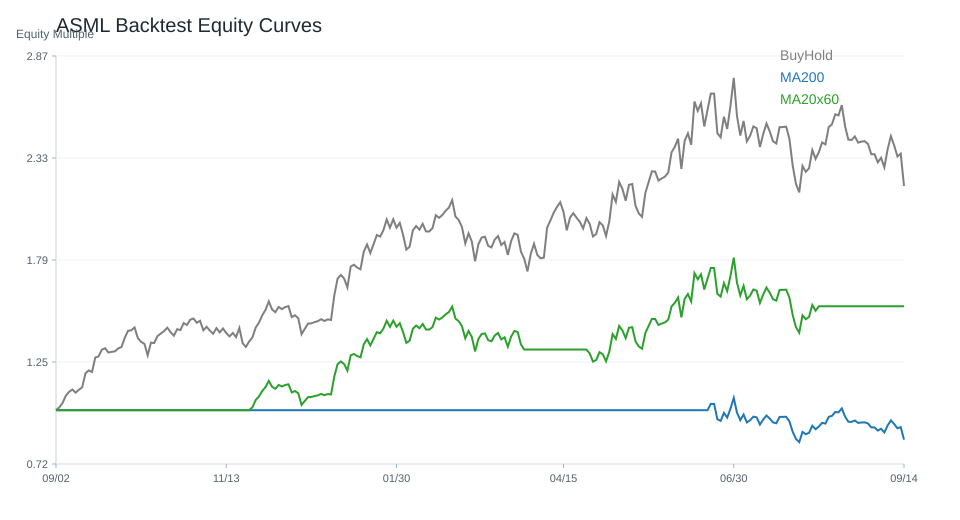

20 日
-2.73%60 日
1.43%觀察等級
降低關注市場資料
2026-09-01- 成交量905,719.00
- 20 日均線1,756.63
- 60 日均線1,772.67
- 200 日均線1,470.55
- 距 52 週高點-16.30%
- 距 52 週低點129.41%
技術指標
Python 計算- RSI1440.08
- MACD hist-12.13
- KD K/D11.25 / 14.93
- ADX12.60
- 布林上緣1,870.91
- 布林下緣1,642.35
量價與事件
規則式分析- 量價型態量能中性
- 量價分數-1
- 20 日量比0.79
- OBV 20 日變化-10.84%
- 事件偏向資料不足
- 事件分數資料不足
研究訊號與觀察等級
不是買賣建議降低關注；研究訊號 偏空，分數 -4。
部分條件偏弱，研究關注度應低於正向標的。
- 跌破 20 日均線
- 站上 200 日均線
- MACD histogram 為負
- KD 偏弱
- 量價型態：量能中性
- 量價未出現明確偏多或偏空結構
- OBV 20 日量壓偏負向
- 回測最大回撤偏高
回測摘要
歷史資料研究| 策略 | CAGR | Sharpe | 最大回撤 | 勝率 | 交易次數 |
|---|---|---|---|---|---|
| 價格高於 200 日均線 | 19.60% | 0.72 | -42.16% | 52.80% | 12 |
| 20/60 日均線交叉 | 21.13% | 0.76 | -29.36% | 52.37% | 9 |
| 買進持有 | 38.32% | 0.97 | -45.48% | 53.15% | 1 |
圖表
價格 / 量價 / 技術 / 回測ASML 價格均線

ASML 量價關係

ASML 技術指標

ASML 回測
